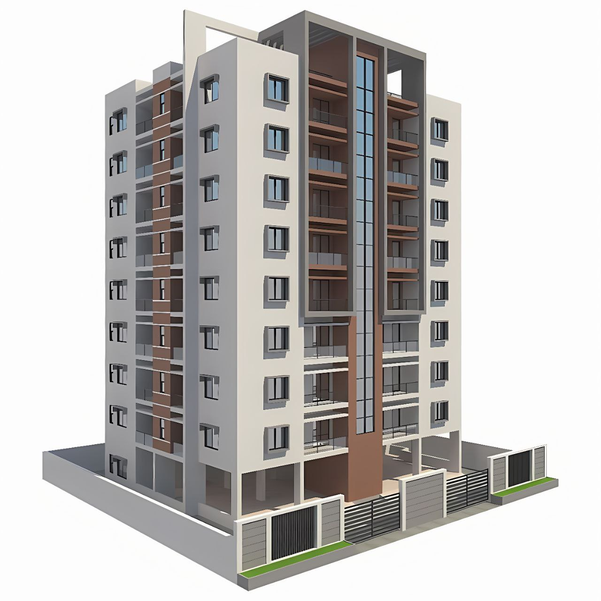

العاشر من رمضان
المستشفيات

مستشفى العاشر من رمضان هي واحدة من أكبر المستشفيات في المنطقة، وتقدم خدمات طبية متكاملة.
المدارس

مدرسة العاشر من رمضان الدولية تقدم تعليمًا متميزًا لجميع المراحل الدراسية.
المولات

مول العاشر من رمضان يوفر مجموعة متنوعة من المحلات التجارية والمطاعم.